{kind=link}
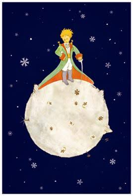
Asteroid B-612
B-612 เป็นดาวเคราะห์น้อย (Asteroid) ขนาดเล็กมาก มีพื้นที่เพียงพอให้เจ้าชายน้อยเดินรอบดาวได้ในเวลาไม่นาน และสามารถชมพระอาทิตย์ตกได้หลายครั้งในวันเดียว เพียงแค่ขยับเก้าอี้ไปตามตำแหน่งของดวงอาทิตย์
The Little Prince หรือ เจ้าชายน้อย เขียนโดย Antoine de Saint-Exupéry เป็นวรรณกรรมเยาวชนที่ได้รับการแปลมากที่สุดเล่มหนึ่งของโลก ถ่ายทอดเรื่องราวเกี่ยวกับมิตรภาพ ความรัก และการเติบโต
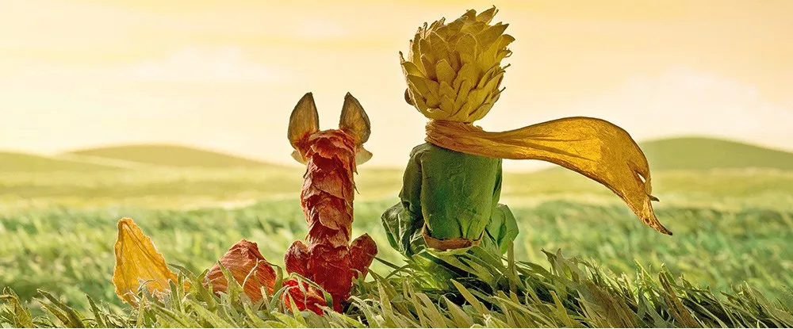
เรื่องราวเริ่มต้นจากนักบินที่ประสบอุบัติเหตุเครื่องบินตกกลางทะเลทรายซาฮารา และได้พบกับเด็กชายลึกลับที่เรียกตัวเองว่า "เจ้าชายน้อย" เด็กชายคนนี้เดินทางมาจากดาว B-612 และเล่าเรื่องการผจญภัย การเดินทางผ่านดาวต่าง ๆ และการพบผู้คนหลากหลายรูปแบบ ซึ่งสะท้อนพฤติกรรมของมนุษย์ในสังคม

หนังสือเล่มนี้สอนให้เราเห็นคุณค่าของมิตรภาพ ความรัก ความรับผิดชอบ และการมองโลกด้วยหัวใจ มากกว่าการตัดสินจากสิ่งที่มองเห็นภายนอก ประโยคที่มีชื่อเสียงที่สุดคือ "สิ่งสำคัญไม่อาจมองเห็นได้ด้วยดวงตา"
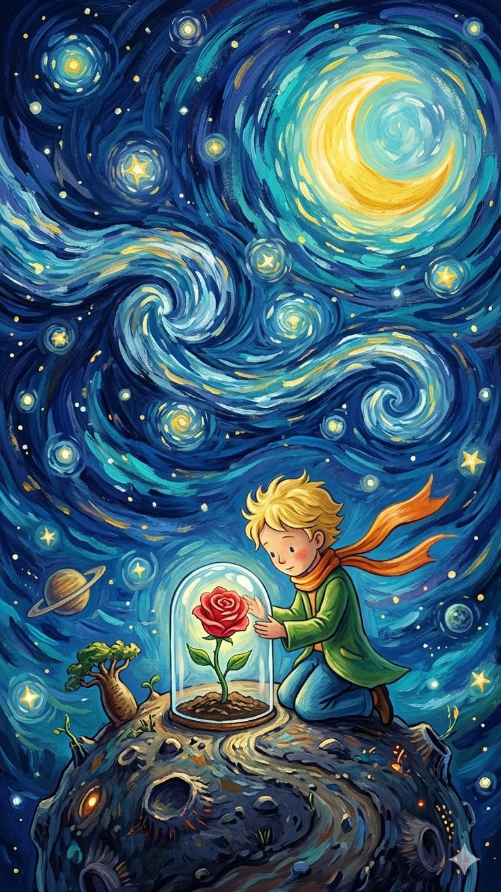
รวมภาพประกอบและคำคมที่น่าประทับใจจากหนังสือเจ้าชายน้อย ซึ่งสะท้อนแนวคิดเกี่ยวกับชีวิต มิตรภาพ และการเติบโต

B-612 เป็นดาวเคราะห์น้อย (Asteroid) ขนาดเล็กมาก มีพื้นที่เพียงพอให้เจ้าชายน้อยเดินรอบดาวได้ในเวลาไม่นาน และสามารถชมพระอาทิตย์ตกได้หลายครั้งในวันเดียว เพียงแค่ขยับเก้าอี้ไปตามตำแหน่งของดวงอาทิตย์
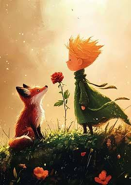
จิ้งจอกอาศัยอยู่บนโลก เมื่อเจ้าชายน้อยเดินทางมาถึง ทั้งสองได้พบกัน แต่จิ้งจอกยังไม่ยอมเล่นกับเจ้าชายน้อย เพราะทั้งคู่ยังเป็นคนแปลกหน้ากัน
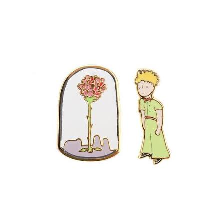
ตัวแทนของความรัก ความผูกพัน และความรับผิดชอบ แม้จะเอาแต่ใจแต่ก็รักเจ้าชายน้อย
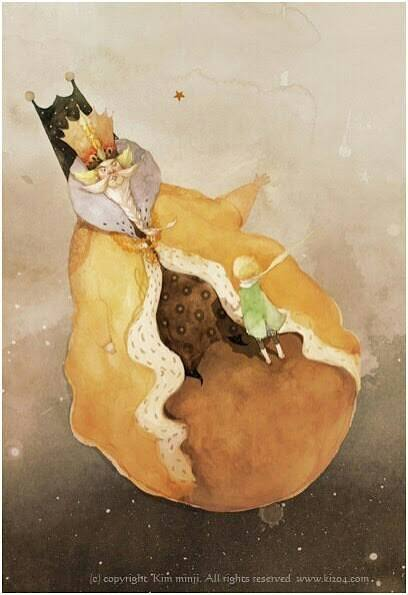
สื่อถึงผู้ที่ยึดติดกับอำนาจและการปกครอง
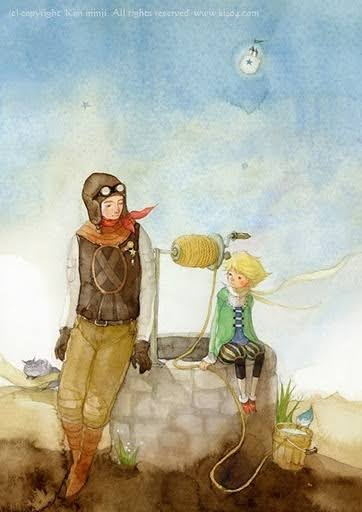
ผู้เล่าเรื่อง เป็นตัวแทนของผู้ใหญ่ที่ยังคงรักษาความเป็นเด็กและจินตนาการไว้ได้
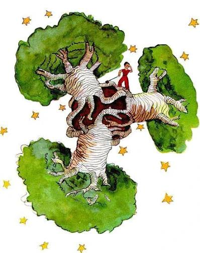
สัญลักษณ์ของปัญหาเล็ก ๆ ที่หากไม่รีบจัดการ จะเติบโตจนกลายเป็นปัญหาใหญ่
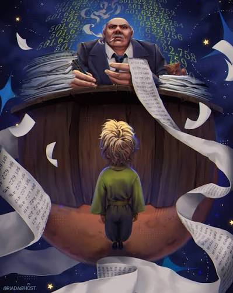
ตัวแทนของคนที่หมกมุ่นกับการสะสมทรัพย์สินจนลืมคุณค่าของชีวิต
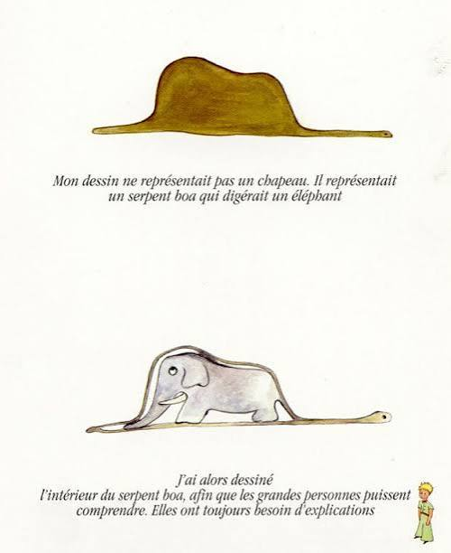
ตัวแทนของความตายและการกลับคืนสู่บ้านหรือจิตวิญญาณ ไม่ได้ถูกนำเสนอเป็นความชั่วร้าย แต่เป็นจุดเริ่มต้นของการเดินทางอีกครั้ง
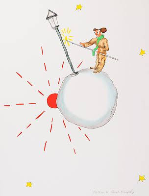
สื่อถึงความรับผิดชอบและการทำหน้าที่อย่างซื่อสัตย์ แม้บางครั้งจะขาดการตั้งคำถาม

สะท้อนการหนีปัญหาและการติดอยู่ในวงจรเดิม

สะท้อนการหนีปัญหาและการติดอยู่ในวงจรเดิม
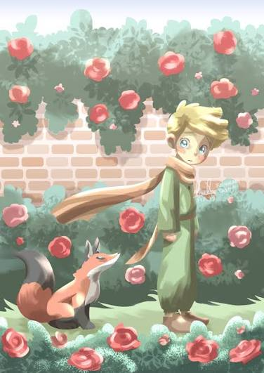
ทำให้เจ้าชายน้อยเข้าใจว่า สิ่งที่ทำให้ดอกกุหลาบของตนพิเศษ ไม่ใช่เพราะมีเพียงดอกเดียว แต่เพราะเขาได้ใช้เวลาดูแลและรักมัน
ฉันชื่นชอบหนังสือเล่มนี้เพราะแม้จะเป็นหนังสือสำหรับเยาวชน แต่กลับแฝงข้อคิดที่ลึกซึ้งเกี่ยวกับชีวิต หนังสือช่วยให้ผู้อ่านมองโลกในมุมที่แตกต่างและตระหนักถึงความสำคัญของความสัมพันธ์ระหว่างผู้คน
หนังสือเล่มนี้มีเนื้อเรื่องเรียบง่าย แต่แฝงข้อคิดที่ลึกซึ้ง ทำให้อ่านแล้วรู้สึกอบอุ่นและน่าติดตาม
แม้จะเป็นเรื่องสั้น แต่ดำเนินเรื่องได้ดี ทำให้ผู้อ่านได้คิดตามตลอดทั้งเรื่อง
แต่ละตัวละครมีเอกลักษณ์และเป็นตัวแทนของแง่มุมต่าง ๆ ในชีวิต ทำให้เรื่องมีความหมายมากขึ้น
หนังสือสอนให้เห็นคุณค่าของความรัก มิตรภาพ และการรับผิดชอบต่อสิ่งที่เราผูกพัน
ใช้ภาษาที่อ่านง่าย เข้าใจไม่ยาก แต่สามารถสื่อความหมายได้อย่างลึกซึ้ง
ภาพวาดมีความเรียบง่ายและเป็นเอกลักษณ์ ช่วยสร้างบรรยากาศของเรื่องได้เป็นอย่างดี
หลังอ่านจบ ทำให้รู้สึกอยากกลับมาทบทวนมุมมองและคุณค่าของสิ่งรอบตัว
ฉันชอบจิ้งจอกมากที่สุด เพราะคำสอนเกี่ยวกับมิตรภาพและความสัมพันธ์สามารถนำไปใช้ได้จริง
ประโยค "สิ่งสำคัญไม่อาจมองเห็นได้ด้วยดวงตา ต้องใช้หัวใจจึงจะมองเห็นได้" เป็นข้อคิดที่น่าจดจำที่สุด
หนังสือทำให้เข้าใจว่าการใช้เวลาและความใส่ใจคือสิ่งที่ทำให้ความสัมพันธ์มีคุณค่า
เป็นหนังสือที่คุ้มค่าแก่การอ่าน เพราะสามารถกลับมาอ่านซ้ำและได้ข้อคิดใหม่ ๆ ทุกครั้ง
ฉันให้หนังสือเล่มนี้ 10/10 และแนะนำให้ทุกคนได้อ่าน เพราะเป็นหนังสือที่เหมาะกับผู้อ่านทุกวัยและให้แง่คิดที่มีคุณค่าต่อการใช้ชีวิต
{kind=link}
{kind=link}
{kind=link}
{kind=link}
{kind=link}
{kind=link}
{kind=link}
{kind=link}
{kind=link}